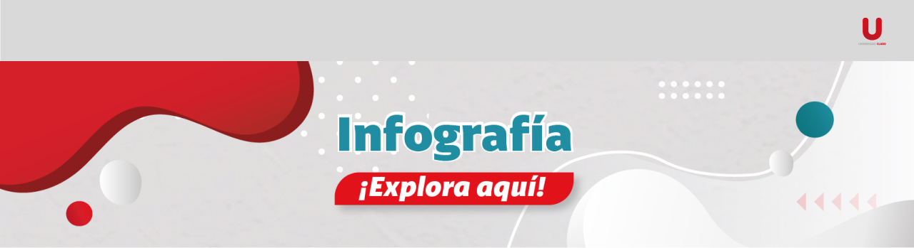

Este recurso permite simplificar datos complejos y resaltar los puntos clave, para facilitar
la
comprensión y retención del contenido. Gracias a su diseño llamativo y estructurado, son
ideales
para transmitir información de manera rápida.
¡Transforma tu manera de aprender y comunicar con este recurso!
Este recurso se utiliza para mostrar información de manera sintética.

Infografía SIIGO – Facturación Electrónica
Tiempo de resolución (HH/L-V)
8:00 am a 5:00 pm
8:00 am a 5:00 pm
| Tipo de requerimiento | Descripción | Primera respuesta | Resolución | Total SLA |
|---|---|---|---|---|
| Contenido de capacitación no multimedia | La solicitud se refiere a la creación de contenido de capacitación no multimedia (como PPT, PDF o infografía) con un tiempo estimado de consumo de 10 minutos por usuario. La información debe ser clara, estructurada y fácilmente digerible para los usuarios. | 2 | 22 | 24 |